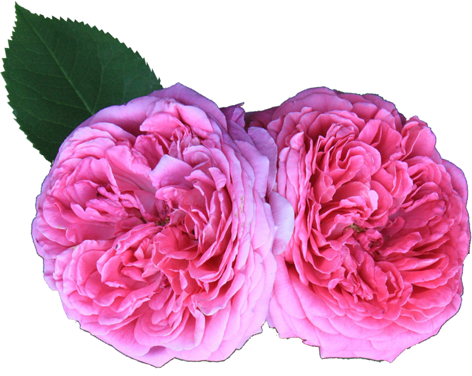
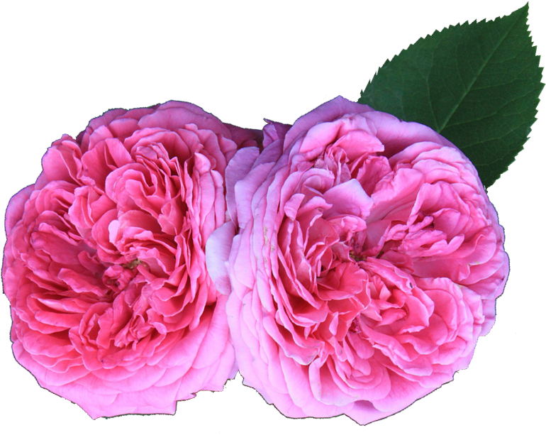
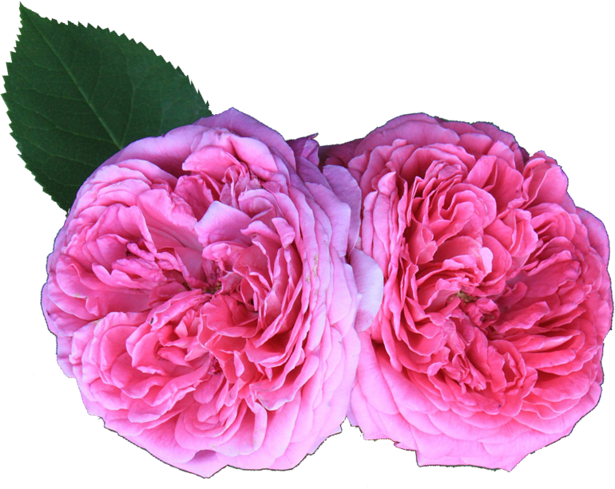
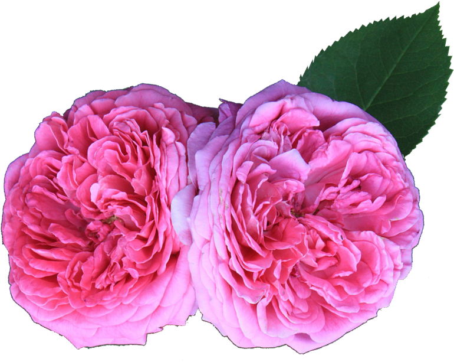

Popular in all Slavic countries, Baba Yaga is a scary creature that inhabits countless myths. Some of them
are even
horror stories that adults tell other adults, such as invocations and chanting spells that summon Baba Yaga.
More
commonly, she’s the antagonist in child tales, which claim that she is an old hag with grotesque appearances
residing in
a wooden forest hut. Legend has it, she will kidnap children and take them to said hut where she will cook
and eat them
as punishment for not behaving according to their parents’ rules. Elders are afraid of her because they
think she can
cast devious spells and curses on them.
The lamya(or lamia) is a female version of a dragon, albeit slightly changed. It’s said that the lamya had three or nine
heads (dog heads), sharp teeth, and a body covered in yellow scales. In some stories it also has razor-sharp claws and
webbed wings.
Unlike your everyday dragon, the Lamya rarely attacked people, but it extorted food from them. It’s said that a lamya
was capable of stopping rivers and lakes, causing droughts and forcing people to contribute sacrifices to it, after
which it would allow rivers and lakes to flow.
It’s also claimed that brave warriors and champions have fought lamyas, but that it was very hard to kill them as all
its heads needed to be severed in order to kill it. They are considered to be mainly water creatures.
The Lamya’s mortal enemy, the Zmey is a dragon which in Bulgarian myths is mostly considered to be a creature that helps
people, rather than being a menace to them.
They are male, and considered to be brothers to Lamyas. And while the Lamya had water-creature-like features, the Zmey
is related to fire and looks more like a classic dragon.
The Zmeys are considered as creatures who serve as protectors of families and crops. They are kings of all weather
phenomena like winds, rains, sunlight, hails, and storms.
Although friends of men, Zmeys were sometimes also hunted, because it was said that a man who eats a Zmey’s heart will
gain superhuman strength and many other abilities.
A trio of female creatures that looked like women, this elusive triumvirate was said to live at the end of the world,
near the Sun.
According to some tales, the first one was young, and was somewhere between 16-20 years old, representing the youth. The
second one was between 25-30, representing the physical prime of a human. The third one was said to be older than 35,
representing wisdom and maturity.
Orisnizi had one job – go into homes where there’s a newborn, and when the baby is three days old, they would predict
its fate.
A female demonic creature which is considered good by some, and evil by others – depending on the type of experience
they had with it.
The Hala (or Ala) was a demon that would sometimes cast hails and storms on crops and destroy them, often causing
troubles to farmers and beekeepers, as it sometimes looted their crops instead of destroying them.
One thing the Hala was known for was its appetite. It’s said that sometimes it even ate children, and on days when it
was really hungry, it would try to eat the Sun and the Moon, which is how solar and lunar eclipses happened.
However, if one would encounter a Hala somewhere in the woods and treat it with respect and trust, the Hala would spare
them and even take a liking to them. In some cases, the Hala would bring good fortune and even make the person who saw
it very rich!
A creature similar to Baba Yaga, but much more sinister and unforgiving. No one knows what a Torbalan looks like, only
that it has a bag (torba means ‘bag’ in Bulgarian, hence the name).
The Torbalan would snatch children who misbehaved and were disrespectful to their parents and elders, taking them far
away in their torba and leaving them in the middle of nowhere. In some cases, a Torbalan would also snatch unattended or
wandering kids.
Also known as Samovilas, these wooden nymphs and fairies were thought to live near bodies of water like lakes and
rivers.
They were considered to be very beautiful, but also dangerous to people. If a man looked at a samodiva, he’d fall in
love with it right away, and if a woman saw one, she would take her own life at the sight of such divine beauty.
But unlike the Vili and the Samovili, they weren’t all bad, as they possessed the power to heal and make healing
potions. They were considered to be ‘Children of the Forest’ and knew all the plants and how to mix them.
That’s why in many Bulgarian folk tales the protagonist would have to eavesdrop on a meeting of Samodivas to find a cure
or remedy for a beloved one.
Samodivas were also known for their dances, as it was said that they dance every night from dusk till dawn. By
performing these dances, they replenished their energy or simply hypnotized wanderers and travelers, and fed off their
life energy.
The word ‘chuma’ in Bulgarian and some other Slavic languages translates literally to ‘plague’, but the Bulgarians took
it up a notch and made it a legend. A scary one at that.
In Bulgarian mythology, Chuma is represented as an ugly old woman with long arms and bony hands. It only appeared in
places where there were lots of sinners, killing them with arrows, but it was merciful to older people and widows,
sparing them if their houses were clean.

 


